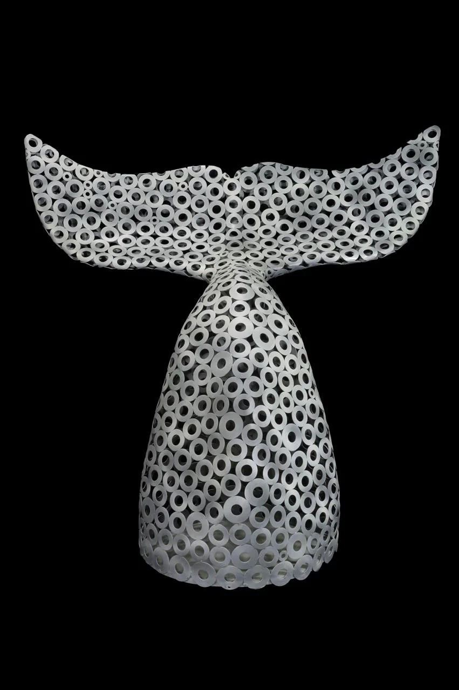
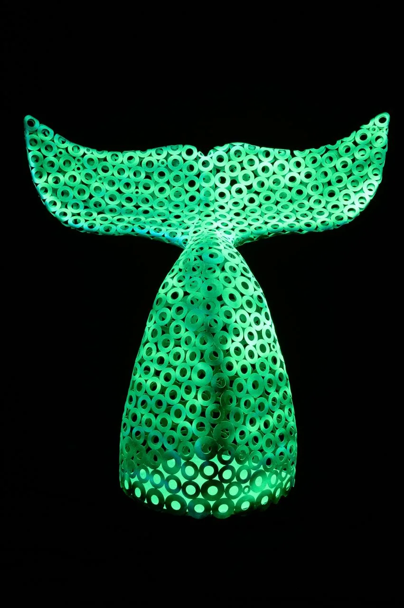

Tinta de aluminato de estrôncio sobre aço carbono, 150 × 110 cm
HermesSantos
Ver as obrasHermes Santos leva para a arte a precisão da indústria: robótica, corte a laser e manufatura aditiva a serviço de esculturas em aço, latão, resina e cristal de Murano.
Formado em mecânica, com mais de três décadas na manufatura automotiva, desenvolveu sua obra de modo autodidata. Também pinta, trabalha com vidro e cria instalações multimídia.
Sobre o artistaEm destaque
Oito obras do acervo. Toque em uma para ver a ficha completa.
Acervo
40 obras, de 2015 a 2025.
Sobre o artista

Hermes Santos é artista visual e designer, com uma trajetória marcada por uma formação singular.
Com base técnica em mecânica e mais de três décadas na manufatura automotiva, desenvolveu sua prática artística de modo autodidata, a partir da observação direta dos materiais e da experimentação com os processos de transformação da matéria.
Fundador da Modefer, referência no setor de autopeças, ele usa a experiência em gestão e engenharia para levar tecnologias do seu parque industrial — robótica, corte a laser e manufatura aditiva — para fins estéticos.
Ele define seu método como o de um buscador.
A disciplina e a precisão da indústria pesada se fundem ao interesse por formas orgânicas e pela fluidez, em obras que exploram a dualidade entre a rigidez técnica e a leveza visual.
Vive e trabalha em São Paulo. Sua produção vai de esculturas em aço e latão a pinturas, trabalhos em vidro e instalações multimídia, e integra coleções privadas e exposições internacionais.
Exposições
Honrarias
Imprensa
Matérias publicadas sobre o artista. Os links abrem o site de cada veículo.